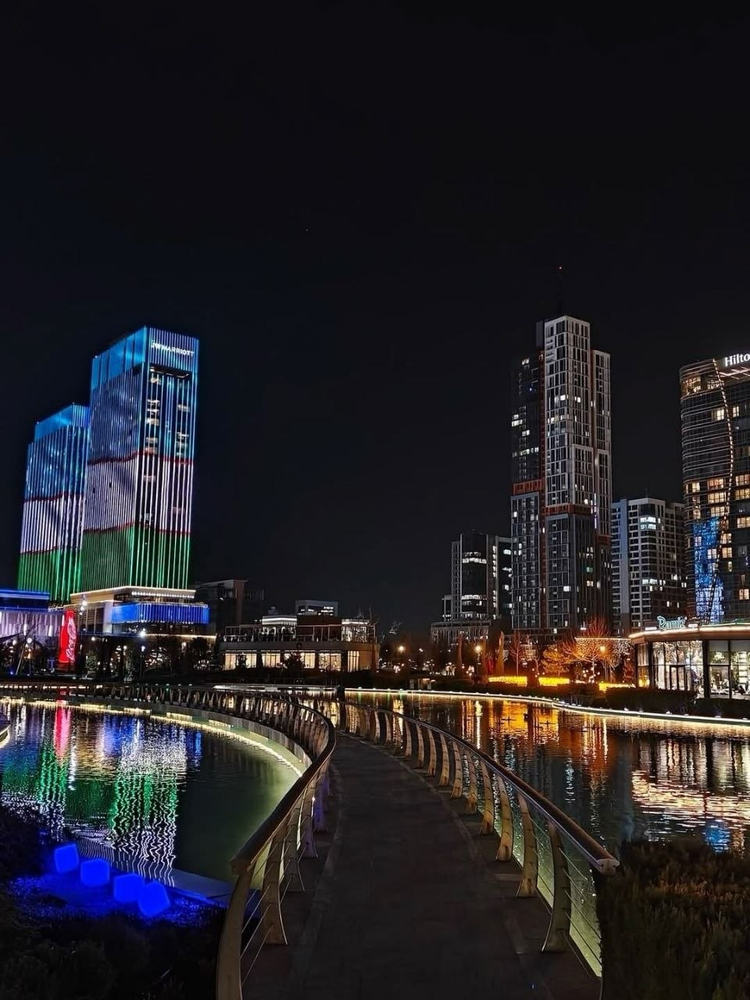

Tashkent & Samarkand
Uzbekistan · July 18–20, 2026

Three days walking through Tashkent and Samarkand — an afternoon of walking, observing, and noticing familiar places from a slightly different perspective.
Uzbekistan · July 18–20, 2026

Three days walking through Tashkent and Samarkand — an afternoon of walking, observing, and noticing familiar places from a slightly different perspective.